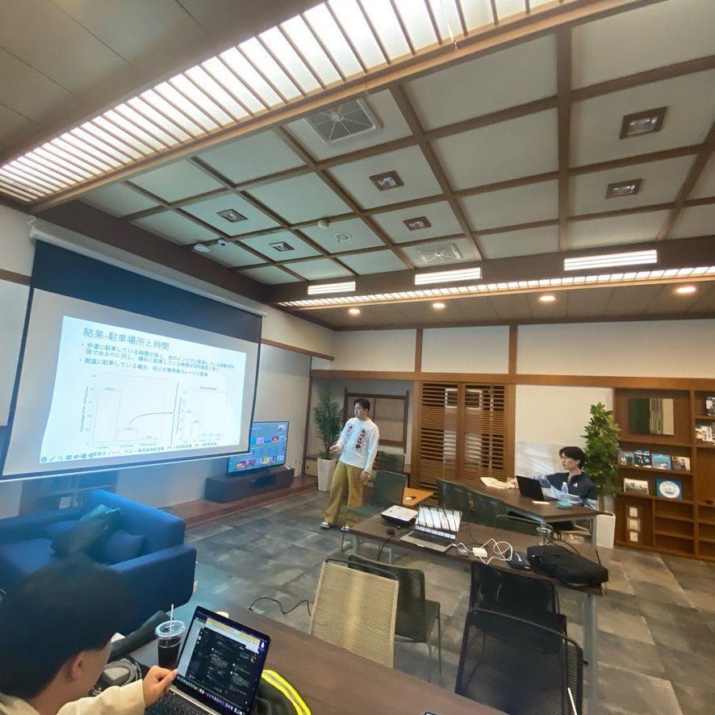
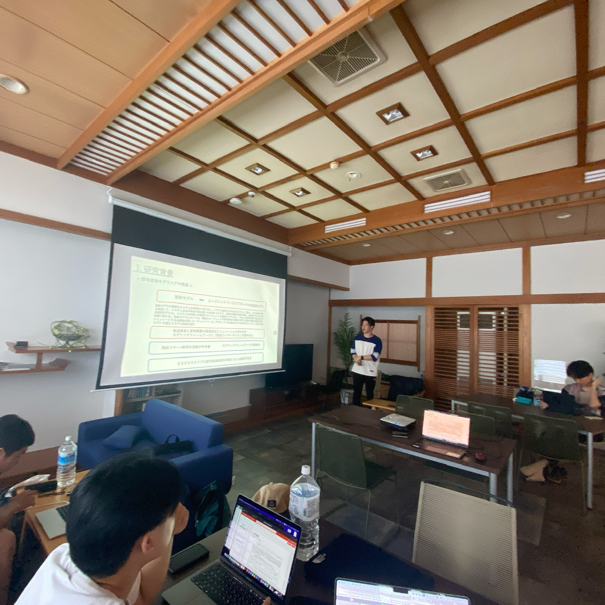
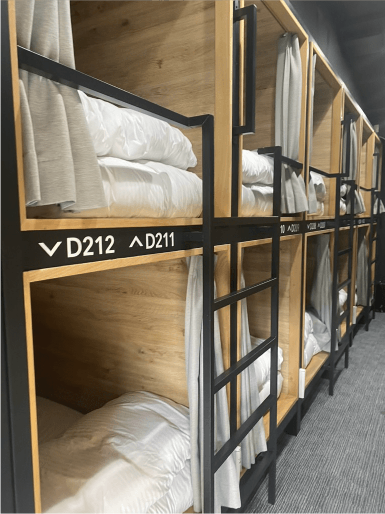
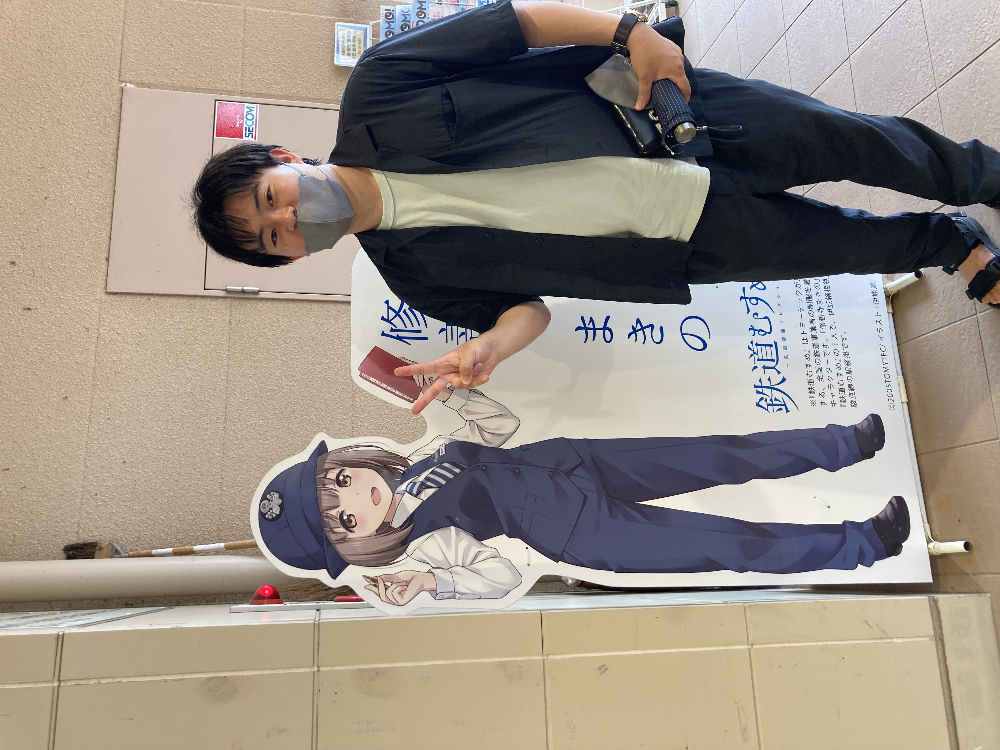
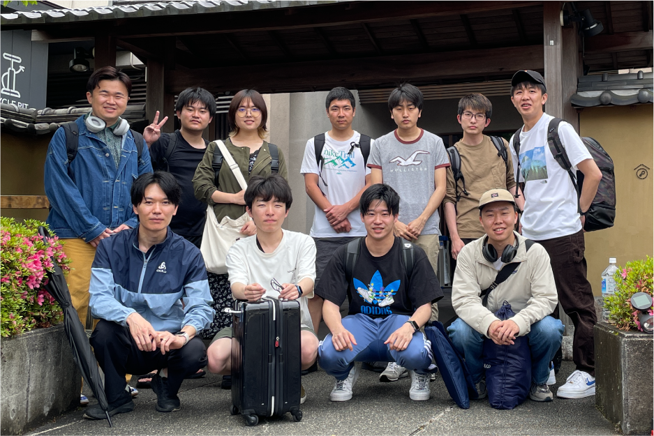

News | ニュース
ゼミ合宿@伊豆長岡,静岡
5月18日(木)~20日(土)に静岡県伊豆の国市の「コナステイ伊豆長岡」にて，論文ゼミ合宿を開催しました．1日目は朝9時に三島駅に集合し,街歩きをしました．当日の発表に備える前泊勢も何人かいました．


街歩きでは三島大社や楽寿園といった歴史，水の都として名高い三島の親水空間を楽しみました．
三島大社の近くで大きい蛇を見つけた時はテンション上がりました．



発表はコモンダイニングという食事会場を貸し切って行いました． 準備を頑張ったおかげで自分にとっても，みんなにとっても良い内容になったと思います！
二日目はレンタルサイクルで修善寺に行く予定でしたが，あいにくの雨だったので電車で移動しました． 修善寺駅では 修善寺まきのちゃん が迎えてくれました．可愛いです．

修善寺はその一帯も観光エリアになっており,「竹林の小径」や足湯も楽しみました．昼食は偶然見つけた「さくだ」というお蕎麦屋さんに行きました． 手作り屋台のような味のある店内では，十割そばが600円でいただけます．わさびと塩だけで食べる塩そばは美味しかったです． 夕方からは論文ゼミpart2と打ち上げをしました!!


今回は大山研究室発足4年目にして初めての合宿でした． これを機に大山研の定例行事を増やしていきます！準備してくれたメンバーや会場を貸していただいたホテルの方々ありがとうございました！
